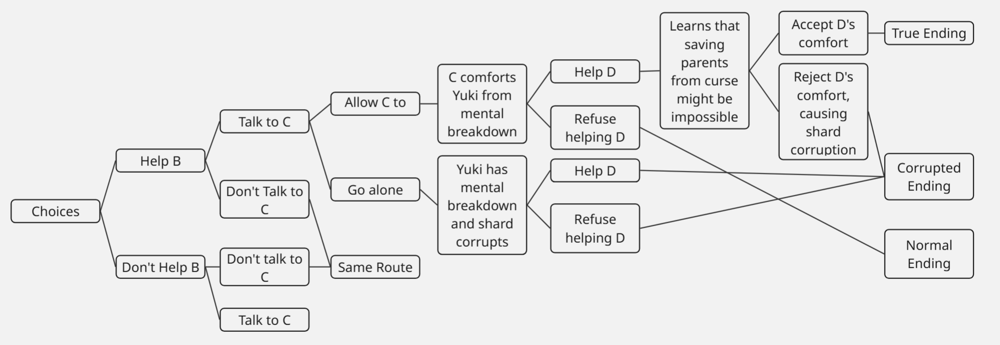
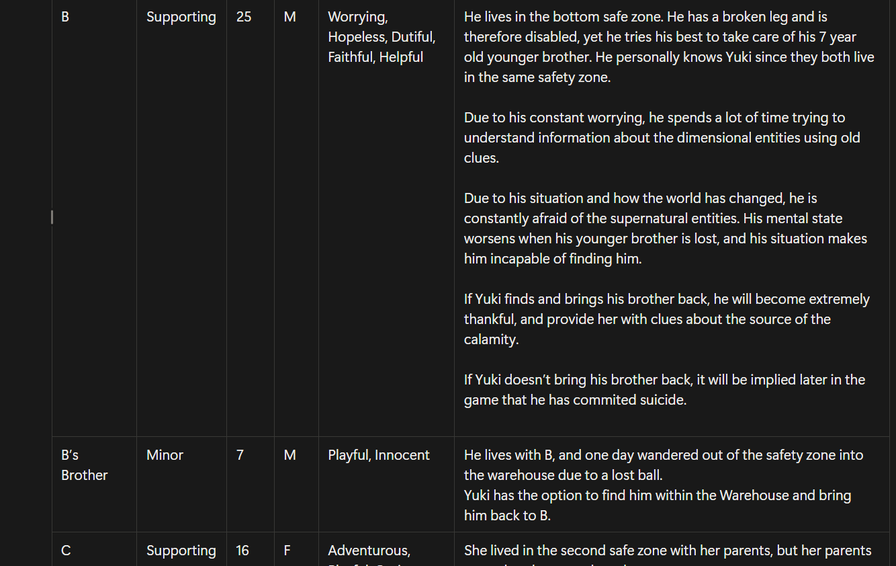
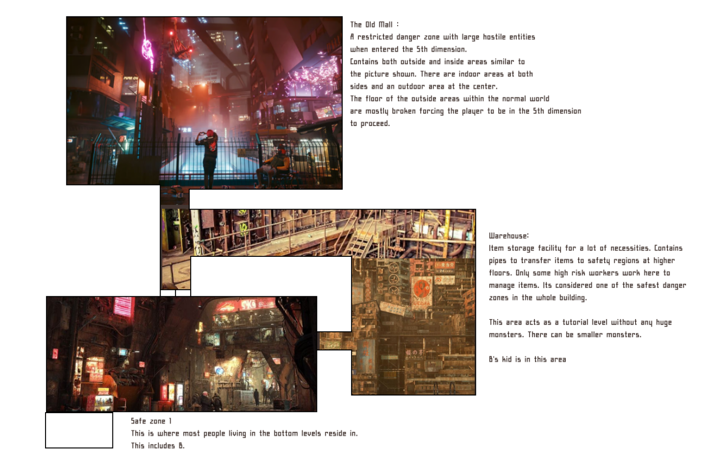

Narrative Design
My Responsibility
I am responsible for packaging broad narrative ideas given by the team into a more cohesive story, with interactable
characters and a more structured story progression.
Story Overview
Born mute, Yuki’s scientist parents tried to cure her but accidentally became a mindless, fifth-dimensional deity.
Now, the world is cursed: anyone who makes a sound is dragged into the fifth dimension and devoured. Retaining no
memory of the incident, and possessing a brain shard that tells her to ascend the Seropa Building to reach the deity,
Yuki will do so, either alone or with the help of people along the way.
Branching Narrative [Still in Progress]

Type of Story
I intend the game to have branching narrative pathways based on if the player chooses to interact with characters or
not. There will be meta-elements within the story, where the player's brain shard will tell the player to not trust
anyone. This will create a dilemma for the player, where they will have to choose between trusting characters or not.
The moral of the story is to show that people must interact and comfort each other to overcome the challenges of a
dystopian world.
Story Planning
Everyone in the group has vague story ideas that could benefit the narrative in some ways. These ideas are
written into Miro, where I can then organize them into a more cohesive story witin Notion. Story planning
includes writing down character details, motivations, and area maps.
Character Description Organized in Tables

Area Map Diagrams given to Level Designer
